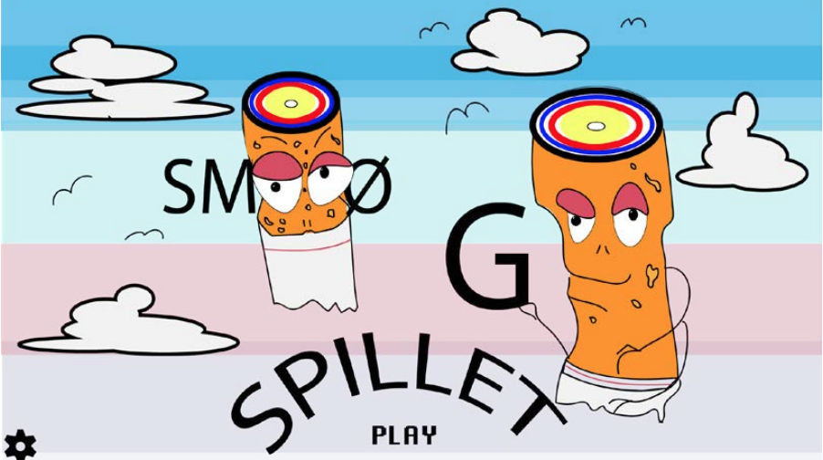

I mit eget spil valgte jeg at lave et spil om at droppe smøgerne
I processen arbejde jeg meget i Adobe Illustrator, hvor vi lærte at tegne figurer i vektor ved brug af shapes
Jeg valgte her at arbejde udfra stilarten Flat Design, og brugte dette som udgangspunkt for mit design.
I denne forbindelse fik jeg arbejdet med .svg , .wav og .mp3 filer.
Jeg har skitseret mit design udfra skitseringsteknikker, samt tilegnet
mig kundskaber indenfor grundlæggende idegeneringsmetoder til at udvikle min ide samt visuelle koncept.
PJ
Animation
I dette tema blev vi introduceret til grundlæggende animationsteknikker.
Med henblik på at lære om interaktive animationer på websider, blev vi introduceret til baggrundsdesign,
karakterdesign, figuranimation og grafik til spil. Hensigten var at vi skulle kunne manipulere animationer
og kæde dem sammen i interaktive sekvenser.
Vi fik til opgave at lave et spil, hvor vi selv skulle designe, baggrund og figurer.
Det var også her vi blev introduceret til JavaScript. I dette tilfælde skulle vi ved hjælp af JavaScript
starte og stoppe animationer, få dem til at falde og generelt bevæge sig på skærmen.

Smøgspillet

Ovenfor ses billeder af gruppespillet.